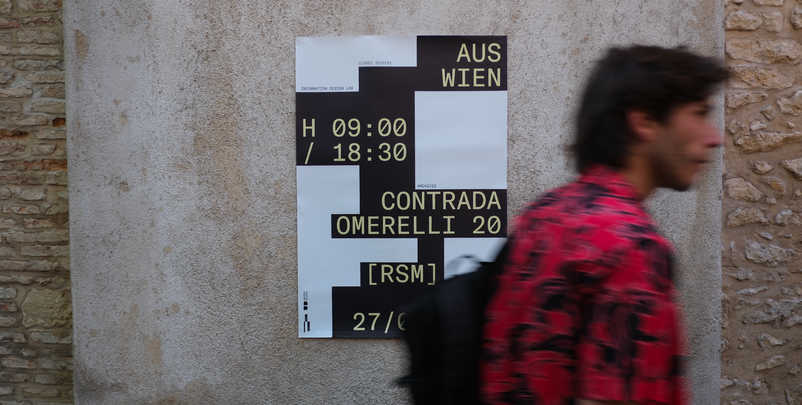

Il progetto Aus Wien è una delle dieci installazioni site specific che racconta, attraverso le cartoline, il viaggio da Vienna a Roma. Le diverse tappe del viaggio vengono rappresentate attraverso 28 strutture che hanno dimensioni variabili sulla base di due criteri ripresi dal dataset dell’archivio.


Le cartoline contenute in questo progetto provengono dal dataset di Austrian Postcards Online (AKON), portale di cartoline della Biblioteca Nazionale Austriaca. Quest’ultime sono state digitalizzate tra il 2012 e il 2014 e raccolgono più di 30mila cartoline provenienti da tutto il mondo, in una fascia temporale che va dal 1896 fino al 1925.
Visita l’archivio → labs.onb.ac.at
Le altezze dei parallelepipedi dipendono dall’altitudine della città rispetto al livello del mare, mentre le larghezze derivano dal numero di cartoline presenti in quella località. Le altezze variano in un intervallo compreso tra 30 mm, per le città situate a quote più basse, e 1500 mm, per le città a quote più elevate. Le larghezze, invece, spaziano da 200 mm a 1500 mm. Infine, la posizione dei parallelepipedi è determinata dalla distanza rispetto a Vienna.
Lo script utilizzato gestisce un’interfaccia interattiva per il caricamento e la visualizzazione di collage di cartoline su un canvas. Per la realizzazione delle grafiche della mostra, ogni collage è stato creato utilizzando il file JSON delle cartoline della specifica località, inserendo il numero totale di cartoline per quella città. Successivamente, le immagini realizzate sono state scaricate e adattate alle dimensioni necessarie dei parallelepipedi espositivi.
Prova lo script → [8583 Hysterische Postkarten] designed by Sirio Procacci


L’installazione si sviluppa lungo la scalinata principale del giardino della sede della Facoltà di Design dell’Università degli Studi della Repubblica di San Marino. È composta da 28 parallelepipedi, ciascuno dei quali raffigura una città incontrata durante il tragitto in auto da Vienna a Roma. Ogni parallelepipedo presenta peculiarità specifiche che ne definiscono la geometria: la larghezza indica il numero di cartoline relative a quell’area, mentre l’altezza è determinata dall’altitudine del luogo. Lo scopo del progetto è valorizzare l’archivio digitale Historical Postcards attraverso il tema del viaggio e dell’esplorazione. L’installazione vuole approfondire il materiale dell’archivio stesso, facendo riscoprire o scoprire all’utente la bellezza nascosta dietro l’oggetto della cartolina, che porta con sé molteplici valori, tra cui l’attesa e la memoria.


La comunicazione visiva si avvale del supporto di pannelli esplicativi, manifesti pubblicitari e logo, che ha la caratteristica di essere variabile all’interno di una stessa griglia.
Il font, GT America Mono, è un carattere monospaziale progettato da Noël Leu, Seb McLauchlan e pubblicato da Grilli Type nel 2016. Scelto per simboleggiare la macchina da scrivere e rimembrare un periodo dove ogni lettera scritta non sarebbe potuta essere cancellata, come nella cartolina.
Anche i colori non sono lasciati al caso, infatti sono rimandi ai colori delle poste austriache.


Questo progetto si distingue per la capacità di narrare un viaggio attraverso un mezzo che oggi è poco conosciuto: le cartoline. Nel contesto attuale, la tecnologia e la sua immediata fruizione hanno ridotto l’emozione e la gratificazione di ricevere un messaggio da una persona cara. AUS WIEN si propone di valorizzare l’attesa e il ritorno alla scoperta di un oggetto che, seppur dimenticato, ci permette di rievocare un passato non così lontano. L’installazione, suggestiva per natura, invita gli utenti a esplorare, scoprire e ammirare luoghi di un’epoca passata.
Link al progetto digitale → Aus Wien - All Roads Lead To Vienna